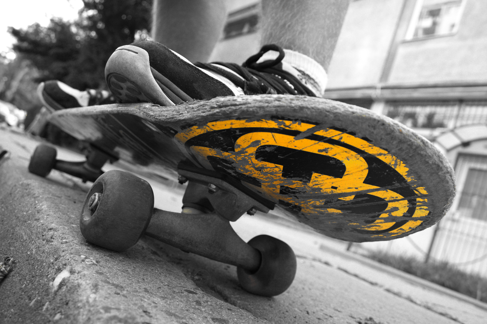

A skateboard is propelled by pushing with one foot while the other remains on the board, or by pumping one's legs in structures such as a bowl or half pipe. A skateboard can also be used by simply standing on the deck while on a downward slope and allowing gravity to propel the board and rider. If the rider positions their right foot forward, he is said to ride goofy; if the rider positions their left foot forward, he is said to ride regular. If the rider is normally regular but chooses to ride goofy, he is said to be riding in switch, and vice versa.

The hardest thing about skateboarding is consistency: the slightest flick of your foot or gust of wind can send your board flying, so it's really anybody's game out there.
Grip tape is a sheet of paper or fabric with adhesive on one side and a surface similar to fine sand paper on the other. Grip tape is applied to the top surface of a board to allow the rider's feet to grip the surface and help the skater stay on the board while doing tricks. Grip tape is usually black, but is also available in many different colors such as pink, yellow, checkered, camo, and even clear. Often, they have designs die-cut to show the color of the board, or to display the board's company logo.
Trucks are the metal T-shaped components that mount onto the underside of the skateboard deck. They hold the wheels and allow the board to turn. Each truck consists of several parts: the baseplate, hanger, axle, bushings, and kingpin. Adjusting the tightness of the trucks can change the responsiveness of the board—looser trucks make it easier to turn, while tighter ones offer more stability, especially at high speeds.
Skateboard wheels are usually made of polyurethane and vary in diameter, durometer (hardness), and shape. Smaller wheels accelerate faster and are suited for technical tricks and street skating, while larger wheels maintain speed better and are preferred for ramps or cruising. Softer wheels absorb rough terrain, making them ideal for cruising or filming, whereas harder wheels slide more easily and are standard for park and street skating.
Bearings are small metal rings that fit inside the wheels and allow them to spin around the axle. They are rated using the ABEC scale, though this is not always a reliable indicator of performance for skateboarding. High-quality bearings can significantly improve speed and smoothness. Keeping them clean and lubricated is essential for optimal performance and longevity.
While most skateboard decks follow a similar basic shape, subtle differences exist to suit different styles. Street decks are typically symmetrical with a double kicktail for tricks, while cruiser boards and longboards have longer, more directional shapes. Some decks feature a deeper concave, which helps with flip tricks, while others are flatter, offering a more stable platform for beginners or transition skating.